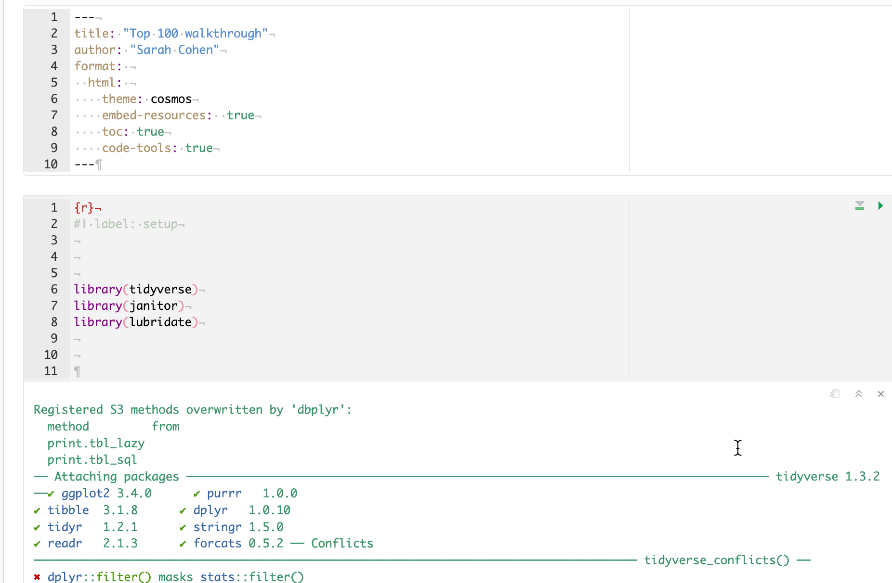
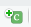
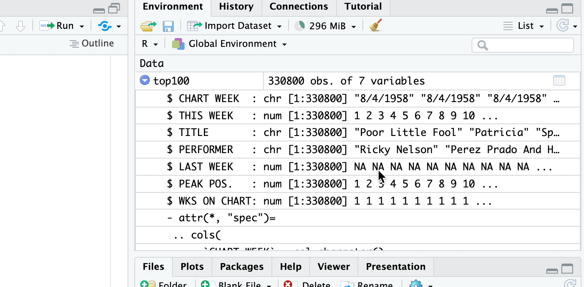
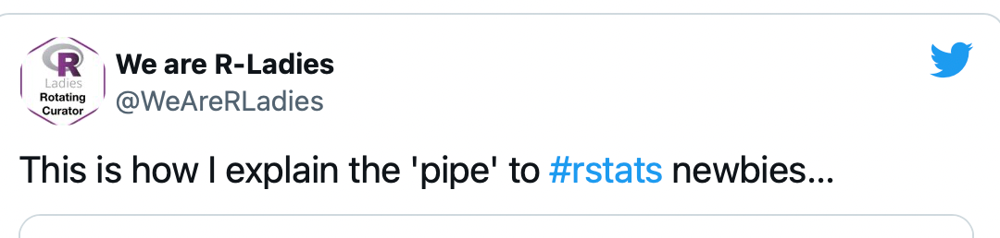
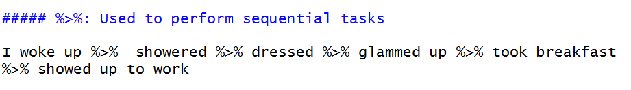

```{r}
#| label: setup
#| message: false
library(tidyverse)
library(janitor)
library(lubridate)
```11 Getting and saving data
Before you start trying to program, remember that you’re not alone when you encounter errors. Here, an accomplished data scientist, illustrates her own frustration. Watch the clock on this cartoon and on your own work: If you’re getting nowhere after about 20 minutes, take a break. If you’re still not getting anywhere, get an extra set of eyes. It’s often as simple as a spelling or punctuation error.

11.1 Billboard Hot 100
Christian McDonald, a data journalism professor at the University of Texas, has compiled a list of Billboard’s Hot 100 hits back to the 1950s, and made it available in his Github account. We’ll be using the data on McDonald’s Github repository at https://raw.githubusercontent.com/utdata/rwd-billboard-data/main/data-out/hot100_assignment.csv
Here is how he has described it:
The Billboard Hot 100 singles chart has been the music industry’s standard record chart since its inception on 8/2/1958. The rankings, published by Billboard Media, are currently based on sales (physical and digital), radio play, and online streaming. The methods and policies of the chart have changed over time.
The data we will use here is a combination of data collected by Kaggle user Dhruvil Dave, along with some scraping and merging by Prof. McDonald. It is stored on the code sharing website Github for safe keeping.
The data dictionary
As of December 2023, this version of runs from its inception in August 1958 through mid-June 2023, before most of Taylor Swift’s Eras tour sent her Hot 100 numbers even higher.
Here is a data dictionary , sometimes called a record layout to go along with the data.
| variable name | type | description |
|---|---|---|
| CHART WEEK | date | The release date of the chart in the form “m/d/yyyy” |
| THIS WEEK | number | The rank (1 through 100) of the song that week |
| TITLE | character | Song title |
| PERFORMER | character | Performer, as published in the chart. There could be different spellings over time. |
| LAST WEEK | number | Last week’s ranking |
| PEAK POS. | number | Highest ranking ever on the Top 100 chart |
| WKS ON CHART | number | Number of weeks it has appeared on the chart, not necessarily consecutive. |
Here are some things to note about it:
- The names of columns are in upper case and contain spaces and punctuation. That makes our life a little more complicated, and we’ll want to fix it.
- It provides the type of data – number, date or text – that should be contained in each column.
- Dates are shown in a way we normally read them in the U.S., such as “12/3/2023”
- Each row represents a song in the designated week. This means that there will be lots of rows for each week, and a row for each song every time it was on the hot 100.
11.2 Set up your Quarto program
You’ll do this every time you start a new document or project in R.
Create an R project in your
maij-workingfolder calledhot-100.Create a new Quarto document and delete everything.
If you’re not already there, switch to the Source view.
Copy and paste the top section from the Quarto lesson delete everything else. Try rendering it to check for errors before you go any further – this part is really picky.
Copy and paste the code chunk below into your document and press the “Play” button to run the code.
This assumes you have installed the packages from the Starting R chapter. Go back and do that now if you skipped it. That step has to be done only once on each computer you use.
This is a common first code chunk. The first option at the top names it “setup”, which tells it to run this code chunk before it does anything else. The second option suppresses some very annoying messages.
This code chunk activates three packages using the library() function. You have to invoke packages you want to use in each document, even though you only have to install them on your computer once.
Here’s what your page might look like after playing the first code chunk (visual mode):

Don’t worry about any messages that came out after you ran the first chunk – they simply show you some information about what is in the libraries you just loaded. They might even be red!
11.3 Import the Hot 100 data file
To “import” data means to pour outside data into an R data frame, which is an R object that contains columns and rows, just like a spreadsheet.
Some people call this “reading” or “loading” data. This file is a CSV file, which stands for “comma-separated values”. Some other forms are shown in Appendix C: File Types in the Wild
When you import the file, R will guess what each column is – text (“chr”), numbers (“num” “), and date or date/time (”date” or “POSIX” in R).
(From now on, you’ll just see the R code that goes inside a code chunk you create, not the part with the backticks and brackets.)
Create a new code chunk using the Insert Chunk button  at the top right of your document, or using the keyboard shortcut .
Use the clipboard icon below to copy the code and paste into your code chunk. You might not be able to see the full name of the web address, but it’s there.
Press the Play button or use the keyboard shortcut control-shift-Return to run the code chunk.
Click on the numbers underneath the code chunk to highlight each row with an explanation of what it does:
1top100 <-
2 read_csv(
3 "https://raw.githubusercontent.com/utdata/rwd-billboard-data/main/data-out/hot100_assignment.csv"
4 )- 1
-
Create a new object in R called
top100using the assignment operator<- - 2
-
Start the function
read_csv()… - 3
- to access a comma-separated data file stored in Prof.McDonald’s Github site. Use just the name of the file, in quotes, if it’s already saved in your projects folder.
- 4
- Don’t forget to close your parentheses.
After running the code chunk, you should see something like this:
Rows: 341300 Columns: 7
── Column specification ────────────────────────────────────────────────────────
Delimiter: ","
chr (3): CHART WEEK, TITLE, PERFORMER
dbl (4): THIS WEEK, LAST WEEK, PEAK POS., WKS ON CHART
ℹ Use `spec()` to retrieve the full column specification for this data.
ℹ Specify the column types or set `show_col_types = FALSE` to quiet this message.So R found:
- 341,100 rows (or records, or observations).
- 7 columns ,
- 3 of which it thinks are character types, and 4 that it thinks should be numbers.
- It named the columns using the first row of the file.
This method of reading a file accepts the default options for importing. You may need to override some of them at times, especially when R guesses your data types incorrectly.
Stop a minute and think about what you just did in one second – you imported a dataset with MORE THAN a quarter of a MILLION rows without any complaint!
There is now a new object in your Enviornment tab, under “Data”, called top100, with “341,100 obs. of 7 variables”.
Import tips
Posit cheat sheets
The “Data import with the Tidyverse” cheat sheet goes through the details of importing data. You may need some help deciphering it until you get used reading reference instructions.
Spreadsheets
You have to use different functions to import spreadsheet files.
For Excel, you would use the readxl library, which you have to activate at the top of the program.
For Google Sheets, you’d use the googlesheets4 library, which is a little harder to use because of Google Drive permissions. For the time being, consider downloading your Google Sheet to a csv in your project folder.
Default to character columns
If you’re not sure about the data types of each column, use an option to import them all as text, or character, columns. Then you can fix them one by one. Text will (almost) never be a problem. The option looks like this:
read_csv( "your file name or URL", col_types=c(.default="c") )
11.4 Look at the data you imported
There are several ways to examine the data you just imported.
Check it in the environment tab
There’s now an object listed in your Environment tab with a blue arrow. Expand it, and you’ll see the column names and what types it found.

Click on it to scroll, filter and sort
To browse the data, click on its name in the environment panel.
Any filters or sorts that you do here won’t last – they’re just on while you’re glancing at the data. But this is useful just to get a little preview of what columns look like and to search for things you know should be there. This search is NOT case-sensitive, which is helpful when you want to get a handle on what’s in your data.

Use functions to examine the rows and columns
But these methods are no better (and really a little worse) than just viewing your data and clicking around in Excel or Google sheets. To share your view of the data and describe it to others, you must use R code.
There are a few standard ways to get a quick view of what’s in your data using functions. First, you can look at the top and bottom of it using the head() and tail() functions. Try to guess what these mean:
head(top100)
tail(top100, n=10)Use the little arrow at the top right of the listing to look at columns that don’t fit on the page.
This list isn’t in chronological order– it’s just showing happened to be on the top and bottom of the original file.
Or, you can look at a list of columns along with their types and a few examples from the top of the file using the glimpse() function.
glimpse(top100)Rows: 341,300
Columns: 7
$ `CHART WEEK` <chr> "1/1/2022", "1/1/2022", "1/1/2022", "1/1/2022", "1/1/20…
$ `THIS WEEK` <dbl> 1, 2, 3, 4, 5, 6, 7, 8, 9, 10, 11, 12, 13, 14, 15, 16, …
$ TITLE <chr> "All I Want For Christmas Is You", "Rockin' Around The …
$ PERFORMER <chr> "Mariah Carey", "Brenda Lee", "Bobby Helms", "Burl Ives…
$ `LAST WEEK` <dbl> 1, 2, 4, 5, 3, 7, 9, 11, 6, 13, 15, 17, 18, 0, 8, 25, 1…
$ `PEAK POS.` <dbl> 1, 2, 3, 4, 1, 5, 7, 6, 1, 10, 11, 8, 12, 14, 7, 16, 12…
$ `WKS ON CHART` <dbl> 50, 44, 41, 25, 11, 26, 24, 19, 24, 15, 31, 18, 14, 1, …Here, you might notice that the names of some of the columns have back-ticks around them. That’s because they don’t follow our rules for column names – they should be lower case, with no spaces or special characters.
11.5 Introducing the pipe
You’ll often use code in this format:
data_set_name |>
verb ( ) |>
verb ( ) |>
etc...That little symbol, |> is called the “pipe”. It means “Take what is on this line, and use it to do the next thing” You can use the shortcut keys Command-Shift-M instead of typing it out.
 
(The pipe character changed a little in recent years; %>% is largely the same as |> )
Using a pipe can help make your code easier to read and write by separating each step into its own command.
For example, glimpse(top100) does the same thing as top100 |> glimpse(). The second version tells R, “Start with the top100 data frame and then glimpse it. I try to separate as much as is reasonable into steps because I can then troubleshoot problems one line at a time.
- Add a code chunk that you’ll edit to clean the column names and fix the dates the data.
- Copy and paste the code below
- 1
-
Start with the
top100data frame that we saved earlier, and then - 2
-
Use a function called
clean_names()to convert them to computer-friendly names that won’t require special handling, and then - 3
- Take a look at it!
Rows: 341,300
Columns: 7
$ chart_week <chr> "1/1/2022", "1/1/2022", "1/1/2022", "1/1/2022", "1/1/2022…
$ this_week <dbl> 1, 2, 3, 4, 5, 6, 7, 8, 9, 10, 11, 12, 13, 14, 15, 16, 17…
$ title <chr> "All I Want For Christmas Is You", "Rockin' Around The Ch…
$ performer <chr> "Mariah Carey", "Brenda Lee", "Bobby Helms", "Burl Ives",…
$ last_week <dbl> 1, 2, 4, 5, 3, 7, 9, 11, 6, 13, 15, 17, 18, 0, 8, 25, 19,…
$ peak_pos <dbl> 1, 2, 3, 4, 1, 5, 7, 6, 1, 10, 11, 8, 12, 14, 7, 16, 12, …
$ wks_on_chart <dbl> 50, 44, 41, 25, 11, 26, 24, 19, 24, 15, 31, 18, 14, 1, 49…|> not <-
Don’t confuse the pipe (|>) with the assignment operator (<-). The pipe says, “keep going”. The assignment operator says, “save this for later” .
11.6 Cleaning up and save for later
This section gives you a little taste of the key verbs you’ll be using throughout this class:
select, which picks and rearranges columns
mutate, which lets you create new columns out of old ones.
The code chunk also uses function called mdy(), which stands for “month-day-year”, which in turn tells R that the character chart_week column starts out in that format, as opposed to year-month-day or something else.
Try typing this code chunk into your document instead of copying and pasting. You won’t see anything come out of this when you run it. Instead, it’s saved as new object in your Environment tab.
1top100_clean <-
top100 |>
clean_names () |>
2 mutate ( chart_date = mdy(chart_week)) |>
3 select ( chart_date, title, performer, this_week, last_week,
wks_on_chart, peak_pos)- 1
- Create a new data frame using the assignment operator out of what follows. Leave off this row until you know the rest works.
- 2
-
Use the function
mdy, which converts text in the form of month-day-year into true dates, to transform the chart week into a date variable calledchart_date. - 3
- Pick out the columns to save in the order you want to see them.
11.7 Check your work and save
- Check your data by “glimpsing” it:
top100_clean |>
glimpse()Rows: 341,300
Columns: 7
$ chart_date <date> 2022-01-01, 2022-01-01, 2022-01-01, 2022-01-01, 2022-01-…
$ title <chr> "All I Want For Christmas Is You", "Rockin' Around The Ch…
$ performer <chr> "Mariah Carey", "Brenda Lee", "Bobby Helms", "Burl Ives",…
$ this_week <dbl> 1, 2, 3, 4, 5, 6, 7, 8, 9, 10, 11, 12, 13, 14, 15, 16, 17…
$ last_week <dbl> 1, 2, 4, 5, 3, 7, 9, 11, 6, 13, 15, 17, 18, 0, 8, 25, 19,…
$ wks_on_chart <dbl> 50, 44, 41, 25, 11, 26, 24, 19, 24, 15, 31, 18, 14, 1, 49…
$ peak_pos <dbl> 1, 2, 3, 4, 1, 5, 7, 6, 1, 10, 11, 8, 12, 14, 7, 16, 12, …Note the new data type for the chart_date, and the order of the columns along with the clean names.
- Now save your data as an R data file (called an “RDS” file) like this:
saveRDS(top100_clean, file="hit100.RDS")- Try to process your Quarto document into a self-contained HTML page by pressing the Render button at the top of the document. You might get some errors – that’s ok for now. You’ve already done a lot.
You’ll see how to load data that starts as an R data file in the next chapter.
11.8 What we did
- Created a new Quarto document and added the packages (libraries) we plan to use.
- Imported a comma-separated text file from the web into a data frame object called
top100. - Took a look at it in several different ways.
- Created a second data frame from the first, with names and dates fixed, with only some columns picked out and displayed in a new order.
- Saved it into the project for use in another program.
What you should do next
Before you put away your Quarto file, remember the principles of scripted data and documentation. Take a few minutes to clean up and document your work by narrating each step, including:
- Sub-headings for each of the steps
- Introductory text describing what you are about to do
- Maybe: Some text after the chunks that describe meaningful output or things you notice about the result.
If you’re stuck, you can use the template I created as a starting point.
And breathe
You’ve now created a full, working R program in Quarto format that can serve as a model for everything you do in the future. Congratulate yourself and take a break!